About Guan Yin Citta Dharma Door关于心灵法门
Guan Yin Citta Dharma Door is a Mahayana Buddhist practice compassionately transmitted by Guan Yin Bodhisattva during the Dharma-Ending Age, guiding sentient beings away from suffering toward joy and awakening. With "Sutra Recitation, Making Vows, and Life Liberation" as its core methods, it helps people cultivate the mind and nature, dissolve afflictions, and promote harmony of body and spirit.心灵法门是观世音菩萨在末法时期慈悲传授、引导众生离苦得乐的正信佛教法门。心灵法门以"念经、许愿、放生"为核心的修行方法，帮助大众修心修性、化解烦恼，促进身心和谐。
The Five Treasures五大法宝
Guan Yin Citta Dharma Door rests on Five Treasures: Sutra Recitation, Making Vows, Life Liberation, Plain-Language Dharma, and Great Repentance. These practices enable practitioners to awaken and help others — freeing themselves from suffering and illness, resolving conflicts and karmic obstacles, and cultivating wisdom and inner peace.心灵法门以五大法宝为核心：念经、许愿、放生、白话佛法与大忏悔。这些修行方法能帮助修行者觉悟并利益他人，从痛苦与病患中解脱，化解冤结与业障，培养智慧与内心平静。
Owing to its remarkable efficacy and swift results, Guan Yin Citta Dharma Door has touched the hearts of millions worldwide and continues to grow rapidly.由于其显著的功效与快速的感应，心灵法门已感动全球数百万众生，并持续快速弘扬。

A Path for the Modern Age为现代人而设的修行之道
What is Guan Yin Citta Dharma Door?什么是心灵法门
"Guan Shi Yin Bodhisattva Guan Yin Citta Dharma Door" is one of the 84,000 Buddhist Dharma doors — a precious and compassionate teaching transmitted by Guan Yin Bodhisattva to relieve the suffering of sentient beings in the Dharma-Ending Age."观世音菩萨心灵法门"是佛教八万四千法门之一，是末法时期观世音菩萨为救度众生之苦，应世而传的殊胜法门。
The heart is the lock, and the Dharma is the key; using the Dharma to open the door of the heart — this is "Guan Yin Citta Dharma Door" (literally the "Heart-Spirit Dharma Door"). In today's world, afflictions and pressures grow ever heavier on people's hearts. With great compassion, Guan Yin Bodhisattva has transmitted this teaching — perfectly suited to our age — to help sentient beings dissolve suffering and walk toward awakening.心灵是锁，法门是钥匙，用法门开启心灵之门，即为"心灵法门"。在当今社会，人们烦恼与压力日益增加，心灵承受重负，观世音菩萨以大慈大悲之心，将这一契合时代根基的法门传于人间，帮助众生化解痛苦、走向觉悟。
Social Significance心灵法门的社会意义
Guan Yin Citta Dharma Door propagates Buddhism for the human realm — an authentic teaching that carries forward Chinese culture, fosters mutual learning among civilisations, and promotes social stability and harmony. It nurtures the spirit of peoples, advances the great revival of traditional Chinese culture, and offers positive meaning for modern society."心灵法门"弘扬的是人间佛法，是传承中华文化、文明交融互鉴、促进社会安定和谐的正信佛法。"心灵法门"助建民族精神，推动中华传统文化的伟大复兴，对现代社会具有积极意义。
Practice Philosophy心灵法门的修行理念
Guan Yin Citta Dharma Door holds fast to the essence of Mahayana Buddhism. It shares the same lineage as Chan (Zen) and Pure Land schools, and rests on the four immeasurables: loving-kindness, compassion, joy, and equanimity.心灵法门秉承大乘佛教精髓，与禅宗、净土宗同宗同源，依止"慈、悲、喜、舍"的修行理念。
In its methods, it values Chan-like awakening of wisdom and inward contemplation, while also drawing on Pure Land cultivation. It guides practitioners to cultivate the mind in real life, steadily elevate their spiritual state, and ultimately reach freedom from suffering and self-liberation.在修行方法上，既注重如禅宗般开启智慧、观照内心，又融入净土宗的修持理念，引导修行者在现实生活中修心修行，逐步提升境界，达到离苦得乐、自在解脱的目标。
Purpose of Practice修学心灵法门的目的
Guan Yin Citta Dharma Door transmits a Buddhism for real life — teaching people to resolve everyday difficulties. Through practice, we dissolve karmic obstacles in this very life, reduce suffering and illness, and ultimately transcend the six realms of rebirth to reach the Western Pure Land and the Four Noble Paths.心灵法门传授人间佛法，教导人们解决日常生活中的困难，通过修行在今生消除业障、减少病痛，最终脱离六道轮回，离苦得乐，走向西方极乐及四圣道。
Studying Buddhism is not only about theory — it is above all about practice. By applying the Dharma in everyday life, we can transform ourselves, our families, and our society, leading the world toward greater harmony.学佛不仅是学理论，更重在实践，将佛法运用于现实生活中，从而改变自己、家庭与社会，让世界趋向和谐。
The Five Treasures in Detail五大法宝详解
These five methods are at the heart of Guan Yin Citta Dharma Door practice, helping practitioners apply the Dharma in their daily lives.心灵法门以"五大法宝"为修行核心，帮助修行者在现实生活中落实佛法。
Sutra Recitation念经
Reciting Buddhist sutras holds inconceivable power and can transform your destiny. The Great Compassion Mantra can heal 84,000 kinds of illness; the Heart Sutra opens wisdom; the Eighty-Eight Buddhas Great Repentance dissolves karmic obstacles and smooths daily life.念经有不可思议的力量，它可以改变您的命运。念大悲咒可治八万四千种疾病；念心经可以开启您的智慧；念礼佛大忏悔文会让您消除业障，生活无障碍及事事顺利。
The Ten Small Mantras in the sutra books help resolve all kinds of modern troubles. Sincere, steady recitation dissolves karma, brings auspiciousness, and changes one's fate — connecting with the Buddhas and Bodhisattvas so that we receive their compassionate protection, clear obstacles, awaken wisdom, and grow virtuous roots.经书里十小咒，能够化解时下人们所遇到的各种烦恼问题。只要坚持念诵就能够消除孽障，诸事吉祥，从而改变自身的命运。一心至诚地念经能够与佛菩萨感应道交，得到佛菩萨的慈悲护佑，念经不仅能够除障消业，也能够启迪智慧增长善根。
Making Vows许愿
Like realigning and cleansing the mind. Making vows not only brings wholesome wishes to fulfilment — it also elevates one's spiritual state, helps save others, and accomplishes merit.许愿就像重新调整自己的心灵，清洁自己的心灵。许愿不仅可以让所求正事如愿，也能提升自身的境界、救度他人、成就功德。
The power of vows can change destiny — karmic force cannot overcome the power of vows, and the power of vows arises from one's sincere intention. The stronger and purer the vow, the more one can overcome obstacles and stay firm in cultivation. This is why making vows is so essential.愿力可以改变人的命运。业力不敌愿力，而愿力来自个人发心。当一个人愿力越强、发心越正，就能够克服各种障碍以及坚持修心。许愿不仅可以让所求正事皆能如愿，也能够提升自身的境界，救度他人、成就功德。所以许愿是非常重要的。
Life Liberation放生
Life liberation is at once material giving, Dharma giving, and the giving of fearlessness — all three present together, so its merit is truly inconceivable. It does more than bring longevity and auspiciousness: it nurtures our compassion and awakens the Buddha-nature within each of us.放生是财布施，法布施，无畏布施。三施皆具，所以放生功德实乃不可思议。放生不但可让人消灾延寿，吉祥如意，更重要的是放生增长了我们的慈悲心，也唤醒了每个人原有的佛性。
Plain-Language Dharma白话佛法
Plain-Language Dharma brings together the essence of the Three Baskets and Twelve Divisions of the Buddhist Canon with the wisdom-energy of Prajna. It weaves the Dharma into real life to purify the mind and awaken insight.白话佛法融合三藏十二部经典之精华与般若能量，将佛法融入现实生活，净化心灵，启迪智慧。
It uses vivid, simple language to explain the profound teachings of the Buddha, carrying the Dharma into modern life so that sentient beings of affinity in this Dharma-Ending Age can practice within the world, realise their true nature, spread the Mahayana widely, and transcend the six realms.白话佛法是以生动浅显的语言阐释深奥的佛理佛法，将佛法智慧融入现代人生，让末法时期有缘众生能够入世修行，明心见性，广阐大乘，超脱六道。
Great Repentance大忏悔
Sincere repentance — acknowledging past misdeeds, regretting future wrongs, and vowing never to repeat them. Bow sincerely before the Buddha with a true heart, and recite the Eighty-Eight Buddhas Great Repentance: confess old karma and create no new karma.至诚忏悔，忏其前愆，悔其后过，永不复作。在佛前至诚磕头，实心忏悔，并念诵礼佛大忏悔文，忏悔旧业，不造新业。
"All the bad karma I have created — born of beginningless greed, anger, and ignorance, arising through body, speech, and mind — I now fully repent." Great repentance dissolves karma and misfortune, refines the mind, and transforms destiny."我昔所造诸恶业，皆由无始贪瞋痴，从身语意之所生，一切我今皆忏悔。"大忏悔可消业消灾、修心改命。
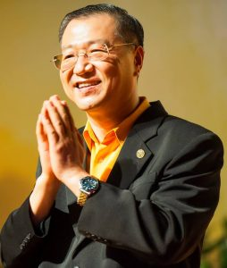
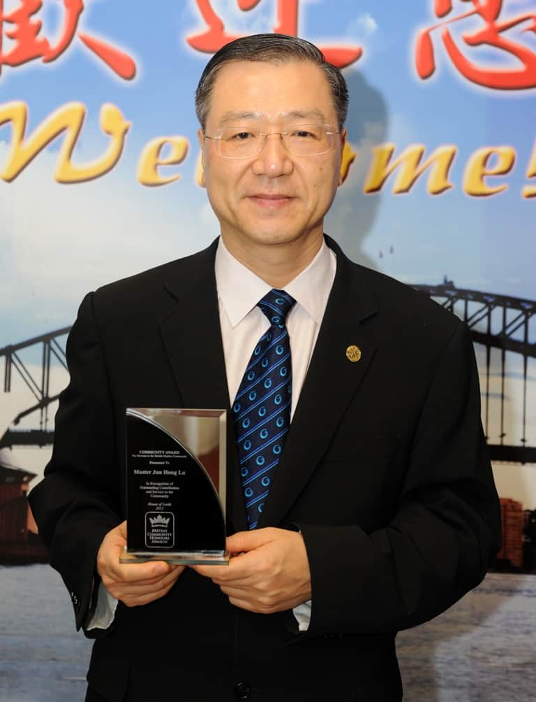
About Master Jun Hong Lu关于卢军宏老师
Founder of Guan Yin Citta Dharma Door & Renowned Overseas Chinese Leader心灵法门开山宗师 & 著名爱国侨领
Master Jun Hong Lu, the founding master of Guan Yin Citta Dharma Door and a patriotic leader of the overseas Chinese community, completed his karmic mission in this world and peacefully entered Nirvana at 4:00 a.m. on 10 November 2021 in Sydney, Australia, at the age of 62.心灵法门开山宗师、爱国侨领卢军宏台长，于2021年11月10日4时，化世因缘圆满，于澳大利亚悉尼，安详示寂，享年六十二岁。
Master Lu began propagating the Dharma in 1997 and founded Guan Yin Citta Dharma Door in 2006. Over two decades he devoted himself tirelessly to teaching the Dharma and delivering countless beings. His footprints of Dharma propagation reached across the world, guiding millions of wandering, suffering beings of this Dharma-Ending Age into the Buddha's path and perpetuating the Buddha's wisdom — spreading the Mahayana widely, with boundless merit.卢军宏台长弘法始于1997年，创始心灵法门于2006年，历经二十年，呕心沥血精勤弘法度众，弘法足迹遍及世界，度化千万轮回颠倒末法众生，步入佛门、续佛慧命，广阐大乘，弘范三界，功德无量。
Through twenty years of radiant teaching in this world he endured every hardship and burned his own life for the benefit of sentient beings — awakening deep faith in cause and effect, breaking through delusion. Even during his final retreat, he remained indomitable and joyful, continuing to give Plain-Language Dharma teachings; never forgetting beings caught in pandemic hardship, he transmitted and encouraged recitation of the Medicine Buddha Empowering Mantra to counter negative energy and shared karma.师父人间二十年辉煌弘法历程，历尽艰辛，燃烧身命，启发众生深信因果，破迷开悟。师父闭关休养期间，金刚不退，顽强乐观，坚持开示白话佛法；时刻不忘身陷疫情苦难众生，加持开示持诵药师灌顶真言抵挡负能量与共业。
Master Lu's achievements in propagating Buddhism, preserving Chinese culture, and promoting peace among world religions and cultures were internationally recognised. He was repeatedly invited by UNESCO to deliver keynote speeches and was highly respected on the world stage. Over three decades as a patriotic overseas Chinese leader, he made outstanding contributions to the growth of China–Australia friendship.师父弘扬佛法、传承中华文化、促进世界宗教文化和平，成就卓著，备受国际肯定，屡获联合国教科文组织邀请发表演讲，享誉国际；三十年爱国侨领生涯，推动中澳友谊发展，贡献杰出。
Titles and Positions曾担任职务
- check_circle Chairman, Australian Oriental Media Broadcasting Television Group澳洲东方传媒广播电视集团董事长
- check_circle Chairman of the Board, Australian Oriental Media Buddhist Charity澳洲东方传媒弘扬佛法慈善机构董事局主席
- check_circle President, Australian Chinese Buddhist Association澳洲华人佛教协会会长
- check_circle Justice of the Peace, Australia澳大利亚太平绅士
- check_circle Datuk honorary title, Malaysia马来西亚拿督
- check_circle Honorary Visiting Professor, University of Siena, Italy意大利锡耶纳大学荣誉客座教授
For twenty years Master Lu worked without rest to spread the essence of Buddhism in Australia and around the world, advancing charitable work and the peaceful exchange of cultures. His teachings reached nearly ten million followers across more than fifty countries and regions.卢军宏台长二十年来孜孜不倦、全年无休致力于在澳洲及全世界弘扬佛教精髓，推动慈善事业与文化和平交流发展，至今已经在全世界五十多个国家与地区拥有近1000万信众。
Master Lu's Awards & Recognition卢军宏台长国际荣誉
Over two decades, Master Lu's work in propagating Buddhism, preserving Chinese culture, and advancing interfaith peace received honours from the United Nations, European parliaments, and leading universities.二十余年来，卢军宏台长在弘扬佛法、传承中华文化与促进宗教和平方面的贡献，屡获联合国、欧洲议会及世界顶尖学府的肯定与表彰。
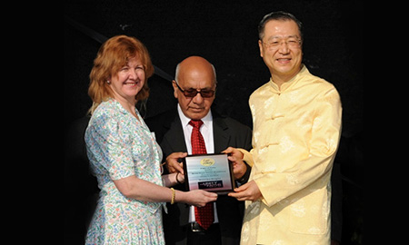
World Peace Award (Buddhism)世界和平奖（佛教）
On 8 July 2012, Master Lu was invited by The Unity of Faiths Foundation as guest of honour at its event in London. He was presented with the World Peace Award (Buddhism) and named Ambassador for World Peace 2012. The ceremony at Upton Park drew more than 40,000 attendees, with Deputy Mayor of London Victoria Borwick and UK Members of Parliament presenting the award.2012年7月8日 – 卢台长应邀参与了由"世界宗教联合大会"(The Unity of Faiths Foundation) 在英国伦敦所举办的活动，担任荣誉嘉宾。该会特别颁发"世界和平奖(佛教)" 给卢台长，并同时授予2012年"世界和平大使"称号。颁奖典礼在伦敦厄普顿广场隆重举行，现场有四万多人参加，伦敦市副市长维多利亚·柏维克和英国国会议员亲自颁奖。
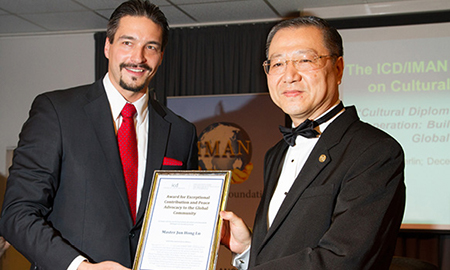
World Peace Outstanding Contribution Award世界和平杰出贡献奖
On 18 December 2013, as part of the Global Cultural Diplomacy Summit, the World Cultural Peace Award ceremony was held at the European Commission headquarters inside the German Federal Parliament in Berlin. Master Lu was presented with the World Peace Outstanding Contribution Award by the former Prime Minister of Iceland, Halldór Ásgrímsson.2013年12月18日 – 作为"2013年度全球文化外交峰会"的主要活动之一，世界文化和平奖的颁奖典礼在德国联邦议会大厦的欧盟委员会总部举行。卢军宏台长被授予"世界和平杰出贡献奖"，由冰岛前总理Halldór Ásgrímsson亲自授奖。
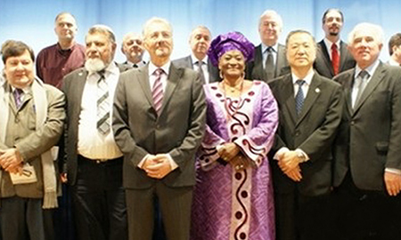
Global Cultural Diplomacy Summit, Berlin全球文化外交峰会（德国柏林）
Master Lu was invited to attend the 2013 Global Cultural Diplomacy Summit in Berlin, discussing cultural diplomacy in an interdependent world. Other attendees included former senior Australian minister Simon Crean, former Romanian president Emil Constantinescu, former Irish Taoiseach Bertie Ahern, former UNESCO General Conference President Amb. Katalin Bogyay, and former Spanish Foreign Minister Trinidad Jiménez.2013年12月18日 – 卢军宏先生应邀出席了在德国首都柏林召开的"2013年度全球文化外交峰会"，讨论在相互依存的世界中的文化外交。澳大利亚前高级部长Simon Crean、罗马尼亚前总统Emil Constantinescu、爱尔兰前总理Bertie Ahern、联合国教科文组织大会主席Amb Katalin Bogyay、西班牙前外交部长Trinidad Jiménez女士等人出席了该峰会。
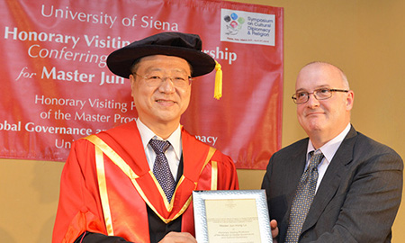
Honorary Visiting Professor, University of Siena意大利锡耶纳大学荣誉客座教授
On 1 April 2014, Master Lu was conferred the honour of Honorary Visiting Professor by the University of Siena, Italy. The solemn ceremony was attended by the Chairman of the Institute for Cultural Diplomacy, the former Vice-Chancellor of Austria, the former Foreign Minister of Cyprus, and Professor Vigagli representing the university's Scientific Academic Council on behalf of the Chancellor.2014年4月1日 – 卢台长荣获意大利锡耶纳大学"荣誉客座教授"殊荣。文化外交机构主席马克先生、前奥地利副总理布赛克先生、赛普勒斯前外交部长柯萨瑞古利斯女士，以及锡耶纳大学科学学术理事会主席维智伽利教授代表校长，参加了这一庄严隆重的颁奖典礼。
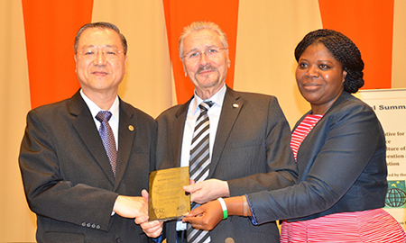
World Peace Education Ambassador世界和平教育大使
On 24 March 2014, the Global Culture of Peace Summit conferred upon Master Lu the honour of World Peace Education Ambassador. The award was presented on behalf of the United Nations by former Romanian President Emil Constantinescu, Executive Director of the World Parliamentary Union, and Ms Joanna, Executive Chair of the International Strategic Alliance Committee.2014年3月24日 – 全球和平文化峰会特授予卢台长"世界和平教育大使"殊荣。世界国会议员联盟执行董事、罗马尼亚前总统康斯坦丁内斯库先生和国际战略联盟委员会执行主席乔安娜女士，代表联合国为卢台长颁发了这一崇高奖项。
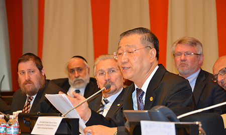
UN Global Culture of Peace Summit联合国全球和平文化峰会
On 24 March 2014, Master Lu JP was invited to the Global Culture of Peace Summit at the United Nations Headquarters in New York, where he delivered a keynote speech titled "Promoting World Peace Through Buddhism and Chinese Traditional Culture". Attendees included UNESCO leaders, the UN Women for Peace leadership, international institutions from 23 countries, world leaders, religious heads, the European Parliament, Yale University scholars, and members of parliament.2014年3月24日 – 卢军宏太平绅士受到纽约联合国总部下属机构的邀请，在联合国大厦，作为主讲嘉宾，出席了由联合国总部倡议的"全球和平文化峰会"，并发表《如何以佛法和中华传统文化来促进世界和平》主题演讲。联合国教科文组织负责人、联合国妇女和平组织负责人、以及来自23个国家的国际机构、世界政要、宗教领袖、欧洲议会、耶鲁大学学术精英，及支持全球和平文化的国会议员出席了此次峰会。
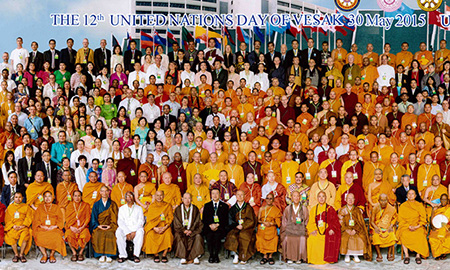
12th UN Day of Vesak, Thailand第十二届联合国卫塞节庆典（泰国）
From 28–30 May 2015, Master Lu attended — as a specially invited guest of the United Nations (first row, tenth from left) — the three-day 12th UN Day of Vesak at the UN Conference Centre in Bangkok, hosted by Mahachulalongkornrajavidyalaya University and the Buddhist Park. The Supreme Patriarch and Crown Prince of Thailand, dignitaries, and thousands of Buddhist leaders, venerable monks, and delegates from more than 80 countries attended.2015年5月28日~30日 – 卢军宏台长作为联合国特邀嘉宾（第一排左十）出席了在泰国曼谷联合国会议中心，泰国摩诃朱拉隆功佛教大学及佛教园举办的为时三天的"2015年第十二届联合国卫塞节庆典"。泰国僧王、王储、政要，来自世界各地的佛教领袖、高僧大德及80多个国家的数千名代表共赴盛会。
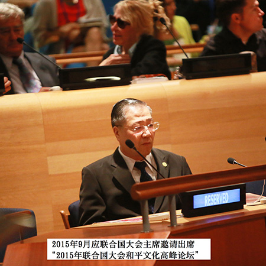
UN High-Level Forum on the Culture of Peace联合国大会和平文化高峰论坛
In September 2015 and September 2016, at the invitation of the President of the UN General Assembly, Master Lu attended the "High-Level Forum on the Culture of Peace" and the "World Peace Summit" held at UN Headquarters, delivering speeches and deliberating world peace alongside the President of the UN General Assembly, Secretary-General Ban Ki-moon, and world leaders.2015年9月 – 2015年9月及2016年9月，应联合国大会主席邀请出席在联合国总部举行的"2015年联合国大会和平文化高峰论坛"、"世界和平高峰论坛"并发言，与联合国大会主席、秘书长潘基文及世界各国政要领袖共谋世界和平。
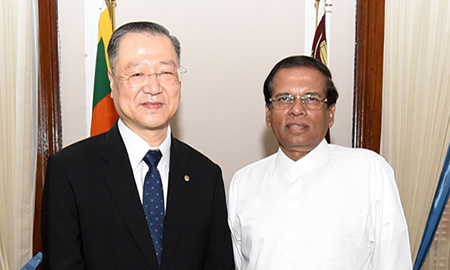
Presidential Visit to Sri Lanka应斯里兰卡总统邀请访问斯里兰卡
On 17 March 2017, the President of Sri Lanka, Maithripala Sirisena, warmly received Master Lu and discussed the development and contribution of Buddhism in Sri Lanka. The President expressed admiration for Master Lu's global contribution to Buddhist culture and shared his intention to establish a Buddhist university so that younger generations could more deeply understand the essence of Buddhist culture.2017年3月17日 – 斯里兰卡总统迈特里帕拉·西里塞纳亲切接待了卢军宏台长，并且探讨了佛教在斯里兰卡的发展与贡献。总统对于卢军宏台长在全世界为佛教文化作出的贡献表示敬佩，并表示会建立一所佛教大学让年轻一代人能更深切认识佛教的精髓文化。
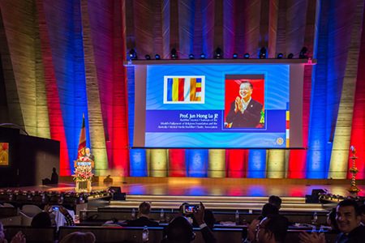
Keynote Speech, 2018 UN Vesak Celebration2018联合国卫塞节庆典主题发言
On 24 May 2018, UNESCO held the 2018 UN Vesak Celebration at its Paris headquarters. UNESCO officials, ambassadors, international leaders, religious heads, venerable monks, and nearly 1,000 distinguished guests and masters from more than twenty countries attended the grand ceremony. Professor Master Lu JP was invited as keynote speaker.2018年5月24日 – 当天联合国教科文组织在法国巴黎总部隆重举行了"2018年联合国卫塞节庆典"活动。联合国教科文组织官员、大使、国际政要、宗教领袖、高僧大德，以及来自二十多个国家地区的近1000位嘉宾与法师出席了当天的盛会。卢军宏教授太平绅士作为特邀嘉宾做了主题演讲。
Our Practice Center奥克兰观音堂
Auckland Guan Yin Citta — formally "Guanyin Citta Dharma Door NZ Charitable Trust" — was established in 2014 as a Buddhist centre dedicated to spreading the Dharma and Guan Yin Citta Dharma Door in New Zealand.奥克兰观音堂，全称观世音菩萨心灵法门新西兰慈善信托（Guanyin Citta Dharma Door NZ Charitable Trust），成立于2014年，是致力于弘扬佛法、弘扬心灵法门的佛教道场。
Upholding the spirit of Guan Yin Bodhisattva — "great compassion relieving suffering" — we honour our teacher, follow the principles of Guan Yin Citta Dharma Door, and guide people to study Buddhism, cultivate the mind, grow in compassion and wisdom, and elevate their spiritual state. Through group practice, Buddhist study, and cultural Dharma events, the Centre offers a platform for people to live out the Dharma in daily life, dissolve afflictions, establish right view, and realise inner peace and clarity.观音堂秉承观世音菩萨"大慈大悲、救苦救难"的精神，尊师重道，依止心灵法门宗旨，引导大众通过学佛修心，培养慈悲与智慧，提升心性与境界。通过共修活动、佛学学习及多元弘法与文化活动，观音堂为大众提供实践佛法的平台，帮助人们在日常生活中化解烦恼，树立正知正见，实现内心的平静与清净。
The Centre encourages benefiting beings with a compassionate heart, uplifting oneself with an awakened mind, and carrying forward the finest traditions of Chinese culture. We advocate love of country and family, taking the precepts as teacher, and cultivating inner and outer alike. Looking ahead, the Centre will continue to follow the principles of Guan Yin Citta Dharma Door and serve all beings of karmic affinity — helping more people purify the mind and find freedom from suffering.观音堂倡导以慈悲心利益众生，以觉悟心提升自我，弘扬中华优秀传统文化，提倡爱国爱家、以戒为师、内外兼修。未来，观音堂将继续依止心灵法门宗旨，弘扬心灵法门，广度有缘，致力于帮助更多众生净化心灵、离苦得乐。

A Decade of Growth in New Zealand十余年的弘法历程
First New Zealand Dharma Assembly新西兰首场法会
New Zealand's first Dharma assembly was successfully held, marking the formal beginning of Guan Yin Citta Dharma Door's propagation locally. Many people of karmic affinity gathered in a solemn and peaceful atmosphere to listen to the Dharma, recite sutras together, and experience the purification and elevation of the mind. The assembly planted seeds of goodness and awakening in many who were new to Buddhism, and laid the foundation for the continuing group practice and Dharma activities to follow.2012年，新西兰首场法会圆满举行，标志着心灵法门在本地正式开启弘扬之路。众多有缘信众齐聚一堂，在庄严祥和的氛围中聆听佛法开示、虔诚诵经，共同感受心灵的净化与提升，现场气氛殊胜而感人。通过此次法会，许多初次接触佛法的信众对修心修行有了更深的认识，也在内心种下了善念与觉悟的种子，为后续共修与弘法活动的开展奠定了基础。
Auckland Guan Yin Citta Established新西兰观音堂成立
In 2014, Auckland Guan Yin Citta was formally established, opening a new chapter in Guan Yin Citta Dharma Door's development in New Zealand and offering local practitioners a pure and dignified centre for study and group practice. The Centre became a platform for regular sutra recitation, Buddhist study, and Dharma events — a stable environment for cultivating the mind and elevating one's spiritual state.2014年，奥克兰观音堂正式成立，标志着心灵法门在新西兰的发展迈入新的阶段，也为本地信众提供了一个清净庄严的修学与共修道场。观音堂的建立，使信众能够定期参加诵经共修、佛学学习及各类弘法活动，在稳定的环境中修心修行，提升境界，为心灵法门在新西兰的长远发展奠定了坚实基础。
Vegetarian Carnival Launched素食嘉年华启动
From 2015 onwards, the Centre has held Vegetarian Carnivals across Auckland, sharing the ideas of healthy, eco-friendly vegetarian living through diverse food experiences and cultural showcases. The lively events have drawn many residents, introducing them to vegetarian culture and Buddhist wisdom in a relaxed and joyful setting — often inspiring a change in perspective and the gradual adoption of a healthier way of life.自2015年起，观音堂陆续在奥克兰各区举办素食嘉年华活动，通过丰富多样的素食体验与文化展示，向社会大众推广健康、环保的素食理念。活动现场气氛热烈，吸引了大量市民参与，在轻松愉悦的氛围中了解素食文化与佛法智慧，不少参与者在体验中转变观念，逐渐接受并实践健康素食的生活方式。
Buddhist Study Classes Opened学佛班开设
The Centre began long-running Buddhist study classes and gradually expanded them across multiple Auckland regions, providing practitioners with a platform to study the Dharma systematically. The classes cover Plain-Language Dharma study, Q&A on Buddhist teachings, and practical guidance for daily cultivation — helping practitioners deepen their understanding step by step and apply Dharma wisdom in everyday life.观音堂长期开展学佛班课程，并逐步在奥克兰多个区域持续开展，为信众提供系统学习佛法的平台。课程内容涵盖《白话佛法》学习、佛学问答解析及日常修行指导，帮助佛友在循序渐进中加深对佛法的理解，将佛法智慧融入生活与实践之中。
Children's Chinese Class Opened儿童中文班开设
The Centre launched a Children's Chinese Class focused on Chinese-language teaching, giving young people a place to learn the language and explore Chinese culture. Through pinyin, character recognition, reading, expression, and interactive lessons, children build their Chinese skills in a cheerful atmosphere while developing good study habits — and, along the way, absorbing values from Chinese tradition such as kindness, gratitude, and inclusivity.观音堂开设儿童中文班，主要以中文教学为核心，为青少年提供学习语言与了解中华文化的平台。课程通过拼音识字、阅读表达及互动教学等形式，帮助孩子们在轻松愉快的氛围中提升中文能力，同时培养良好的学习习惯与表达能力。儿童中文班不仅促进了孩子们的语言发展，也在潜移默化中传递中华传统文化中的善良、感恩与包容等价值观。
10th Anniversary Celebration观音堂十周年
On the Centre's 10th anniversary, a grand celebration was held to look back on a decade of growth and Dharma propagation. In a dignified yet warm atmosphere, the community came together to witness this important moment. The day featured a rich programme of Dharma-study reflections, lion dancing, dance and martial arts performances, a free vegetarian lunch, and a lucky-draw — full of joy, gratitude, and heart.观音堂成立十周年之际，隆重举办十周年庆典活动，回顾十年来的发展历程与弘法成果。在庄严而温馨的氛围中，信众齐聚一堂，共同见证这一重要时刻。活动内容丰富多彩，包括学佛感悟分享、舞狮、舞蹈、武术等文化表演，以及免费素食与抽奖环节，现场气氛热烈而祥和，充满欢喜与感恩。
More to Come…尽情期待…
The journey continues. With deep gratitude for the community that has carried us this far, Auckland Guan Yin Citta will keep upholding the spirit of Guan Yin Bodhisattva and serving all beings of karmic affinity.十年积累，凝聚信众之心。未来，奥克兰观音堂将继续秉承观世音菩萨的慈悲精神，广度有缘众生。
Our Mission我们的使命
Our trust follows the compassionate spirit of Guan Yin Bodhisattva, with a mission to promote true Buddhist teachings, encourage vegetarianism and environmental consciousness, and support the well-being of individuals and communities. By combining cultural education and community outreach, we aim to inspire kindness and build a society rooted in compassion, clarity, and wisdom.我们的信托秉承观世音菩萨的慈悲精神，以弘扬真实佛法、倡导素食与环保意识、支持个人与社区福祉为使命。通过文化教育与社区推广，我们致力于激发善心，构建一个以慈悲、清明与智慧为根基的社会。
We aspire to be a bridge between the wisdom of Buddhism and the broader public, practicing the spirit of the Bodhisattva path, forging wholesome connections, and helping more people attain happiness, clarity, and peace.我们愿成为佛教智慧与广大民众之间的桥梁，践行菩萨道精神，广结善缘，帮助更多人获得幸福、清明与内心平静。
Our Values我们的价值观
Compassion慈悲
Universal love and kindness directed towards all living beings, inspired by Guan Yin Bodhisattva.受观世音菩萨启迪，对一切众生给予无私的爱与善意。
Wisdom智慧
Deep insight into the nature of reality and the path to liberation through Buddhist teachings.通过佛法修学，深刻洞见实相本质与解脱之道。
Service奉献
Selfless action and dedication to the well-being of the community and all sentient beings.以无私的行动，致力于社区与一切众生的福祉。
Join Our Journey加入我们的旅程
May more sentient beings of karmic affinity embark upon Guan Yin Bodhisattva's vessel of salvation -- to purify the mind, be free from suffering, and advance toward enlightenment.愿更多有缘众生登上观世音菩萨的慈航——净化心灵，离苦得乐，迈向觉悟。